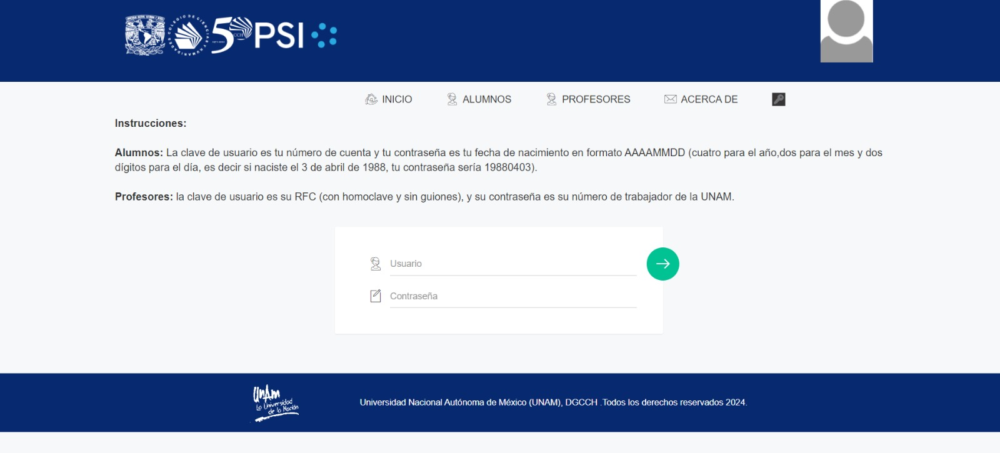
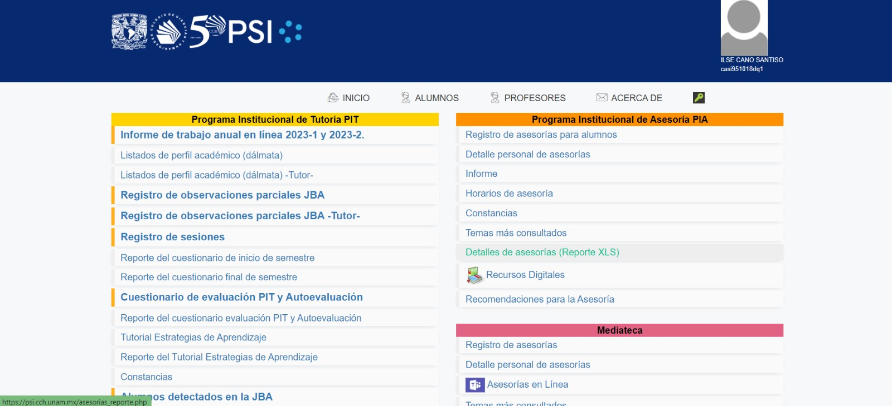
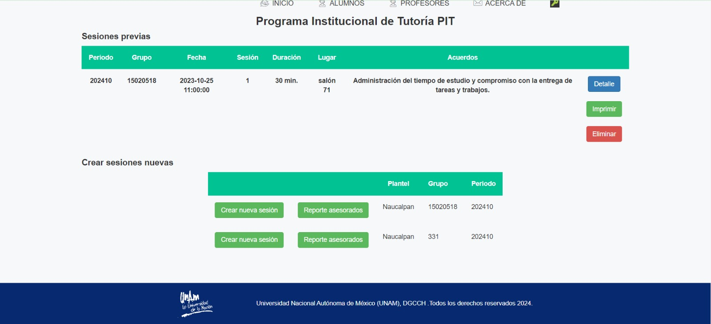
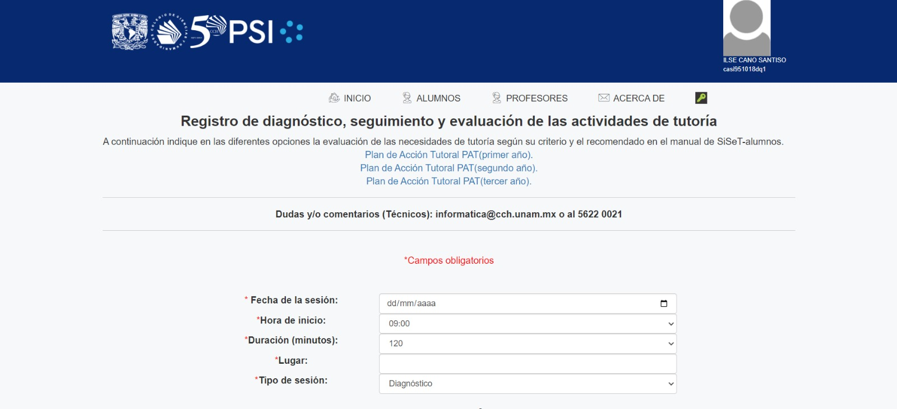

Este es un ejemplo de HTML por parte del PIT.
Paso 1.- Acceder al PSI .
Paso 2.- Dentro de la pagina deberemos acceder al menu del programa institucional de tutorias(PIT).
Paso 3.- Dirigirse al apartado del registro de sesiones.
Paso 4.- Crear una sesion nueva.
.